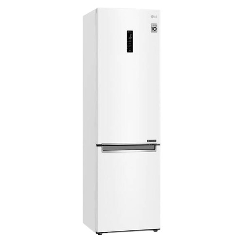
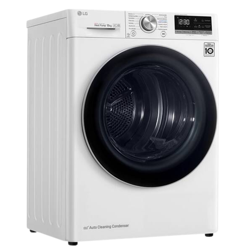
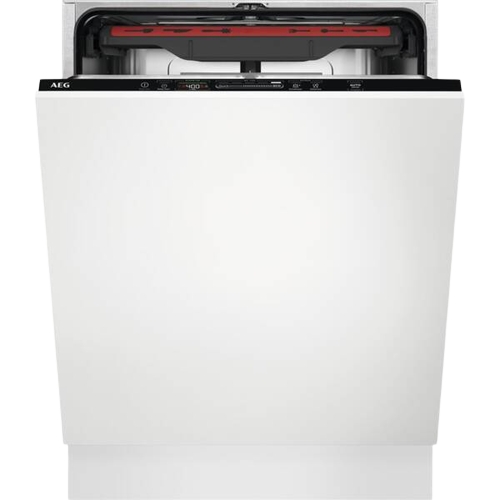
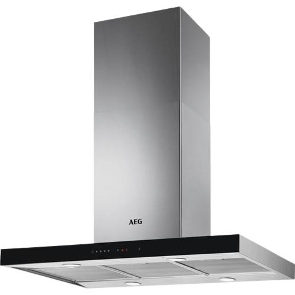
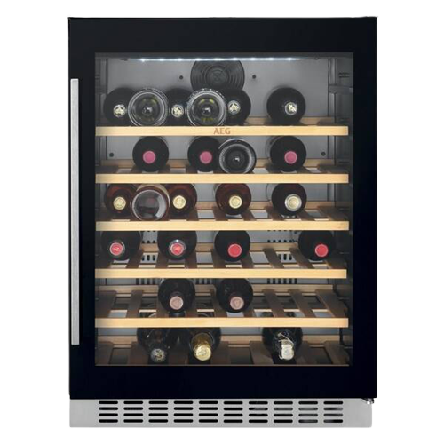

Kodi
.png)
Kombinácia chladničky s mrazničkou LG GBB72SWDFN biela
všetko o produkte:
Stavte na minimalistický dizajn kombinovanej chladničky LG GBB72SWDFN. Získate v nej praktického a moderne vyzerajúceho pomocníka, ktorý vás poteší nízkou spotrebou a hlučnosťou, za čo vďačí invertorovému lineárnemu kompresoru LG. Tiež vám za pomoci technológie Door Cooling+™ pomôže udržať potraviny dlhšie čerstvé.
beznámrazová chladnička s mrazničkou • výška 203 cm • objem chladničky 277 l / mrazničky 107 l • energetická trieda D • 10 rokov záruka na kompresor • systém Door Cooling+™ – rýchlejšia obnova teploty • LG Total No Frost – beznámrazová technológia • Multi Air Flow – rozšírené prúdenie studeného vzduchu • Fresh Balancer – udržanie optimálnej úrovne vlhkosti • Wi-Fi, komunikácia s mobilom, inteligentná diagnostika • externý LED displej • možnosť zmeny smeru otvárania dverí • max. hlučnosť 36 dB • V × Š × H: 203 × 59,5 × 68,2 cm
Naša cena s DPH: 679.00 €
Sušička bielizne LG RC81V9AV3Q biela
všetko o produkte:
Spredu plnená sušička LG RC81V9AV3Q s tepelným invertorovým čerpadlom a motorom (Dual Inverter Heat Pump™) má kapacitu 8 kg bielizne. Spoločne s technológiou EcoHybrid™ je zaistený systém sušenia, s ktorým dochádza k maximálnej úspore energie alebo času.
sušička bielizne • kapacita 8 kg • energetická trieda A +++ • ocenenie dTest • 10 rokov záruka na motor • český panel • Wi-Fi, komunikácia s mobilom, múdra diagnostika • EcoHybrid ™ - program ponúka úsporu času alebo energie, pomáha šetriť rodinný rozpočet • Program pre alergikov - ochrana pre alergikov, redukcia až 99,9% alergénov • LG ThinQ + Wi-Fi - možnosť párovanie sušičky a práčky LG • Program Jemná starostlivosť - vyhladenie záhybov a zníženie pokrčenia vďaka nízkym teplotám sušenia • LED displej • V × Š × H: 85 × 60 × 69 cm
Naša cena s DPH: 779.00 €
Umývačka riadu AEG Mastery FSB53927Z
všetko o produkte:
Nezaťažujte svoje ruky umývaním riadu, keď prácu môže ľahko vybaviť pomocník na to určený – umývačka riadu. Patričný lesk a čistotu dodá vášmu riadu umývačka riadu AEG Mastery FSB53927Z. Túto plne vstavanú umývačku schováte do dizajnu vašej kuchynskej linky.
vstavaná umývačka riadu • energetická trieda D • hlučnosť 42 dB • 7 programov, 3 teploty • kapacita 14 súprav riadu • invertorový motor • 2 úložné koše • zásuvka MaxiFlex • systém Glasscare • systém ProWater • odložený štart 24 h • technológia AirDry • funkcia AquaStop • ovládanie QuickSelect • zásuvka na príbor • optická signalizácia na podlahe • nastaviteľné nôžky • vodný senzor • hmotnosť 39,3 kg
Naša cena s DPH: 669.00 €
Odsávač pár AEG Mastery DIE5961HG nerez
všetko o produkte:
AEG Mastery DIE5961HG je ostrovčekový odsávač pár, ktorý pracuje v energetickej triede A. Vašu kuchyňu spoľahlivo zbaví všetkých pachov a výparov vznikajúcich pri varení, ktoré by vás mohli obťažovať.
odsávač pár • ostrovčekový • šírka 89,8 cm • 3 rýchlosti + intenzívny režim • funkcia Breeze • tichá prevádzka • recirkulácia • indikácia znečistenia filtrov • osvetlenie 4× LED • max. výkon 700 m³/hod • energetická trieda A • hlučnosť 45–61 dB
Naša cena s DPH: 679.00 €
Vinotéka AEG SWB66001DG čierna
všetko o produkte:
Ak ste milovníkom a znalcom vína, zrejme vám doma nechýba slušná zbierka fliaš. Iste uznáte, že tie najlepšie z nich si zaslúžia tie najlepšie podmienky. Môžete ich uložiť vo vínotéke AEG SWB66001DG vyrobenej v čiernom vyhotovení.
vstavaná vínotéka • celkový čistý objem 145 l • energetická trieda G • kapacita 52 ks fliaš • hlučnosť 42 dB • elektronické ovládanie • klimatická trieda N, ST • automatické odmrazovanie • nastaviteľné nôžky • 6 drevených políc • vnútorné osvetlenie LED • sklenené dvere • zmena smeru otvárania dverí • hmotnosť 48,5 kg